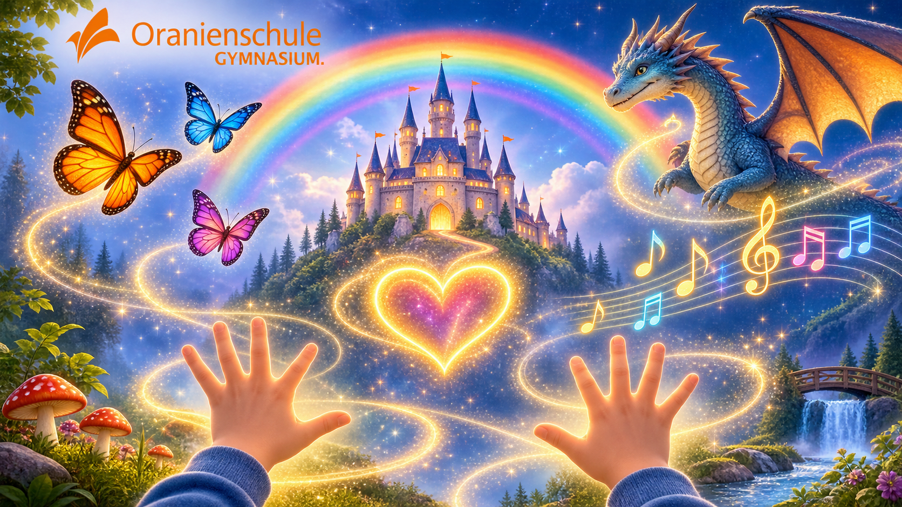

✨ Jetzt zaubern!
✨ Zeige deine Hände!
⌂ Startseite
✨ Halte eine Hand gut sichtbar vor die Kamera.
Handzeichen & Diagnose
🫶✨🏫
Willkommen an der Oranienschule!
Du hast alle Hände voller Magie!
Die Magie braucht deine Kamera
Erneut versuchen
✨ Noch einmal zaubern!